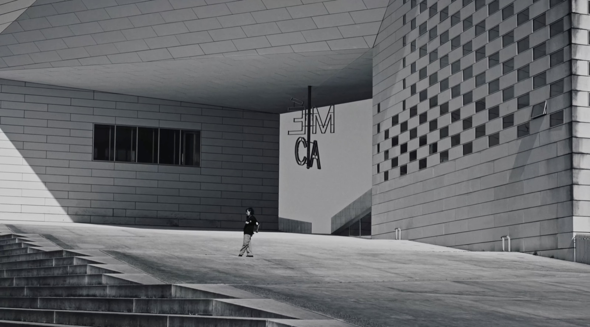
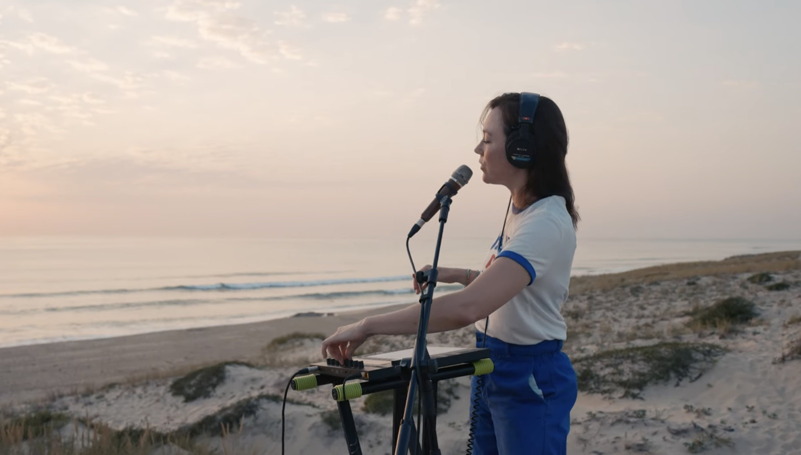
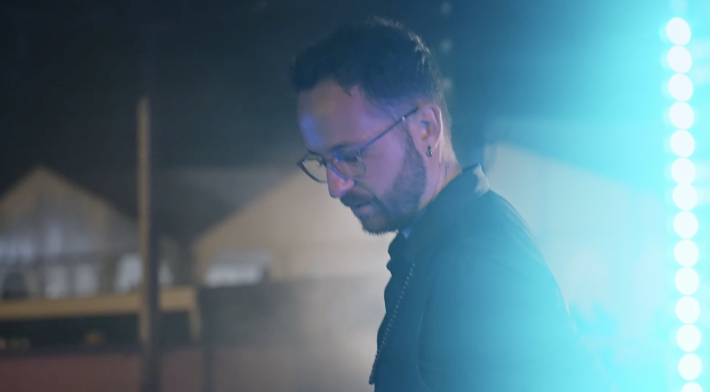

Traitement
Mauvais Grain — Bordeaux
Timéo Taris, réalisateur
2026
Timéo Taris, réalisateur
2026
Une histoire bien racontée ne s'oublie pas.
Observer plutôt que mettre en scène. Accompagner plutôt que diriger. Raconter plutôt que vendre.
Timéo Taris — Bordeaux, 2026


Observer plutôt que mettre en scène.
Observer sans intervenir. Laisser les rencontres, les ambiances et la lumière naturelle guider le récit.
Tourisme — Mettre en lumière vos paysages, vos expériences et l'identité d'un territoire.


Raconter plutôt que vendre.
Construire le film autour de plans fixes. Le mouvement naît uniquement de la danseuse.
Clip — Donner une image à votre musique.


Observer plutôt que mettre en scène.
Prendre le temps d'observer. Un film contemplatif où chaque plan laisse respirer le paysage.
Tourisme — Mettre en lumière vos paysages, vos expériences et l'identité d'un territoire.


Raconter plutôt que vendre.
Tourner durant les dernières minutes du jour, pour une lumière douce et chaleureuse.
Clip — Donner une image à votre musique.

Accompagner plutôt que diriger.
Une approche immersive, au plus près des étudiants, pour saisir les instants spontanés.
Événementiel — Un événement ne dure qu'un soir. Son film, beaucoup plus longtemps.


Accompagner plutôt que diriger.
Se mêler au public : concerts, DJ, jeux de lumière et feu d'artifice.
Événementiel — Un événement ne dure qu'un soir. Son film, beaucoup plus longtemps.